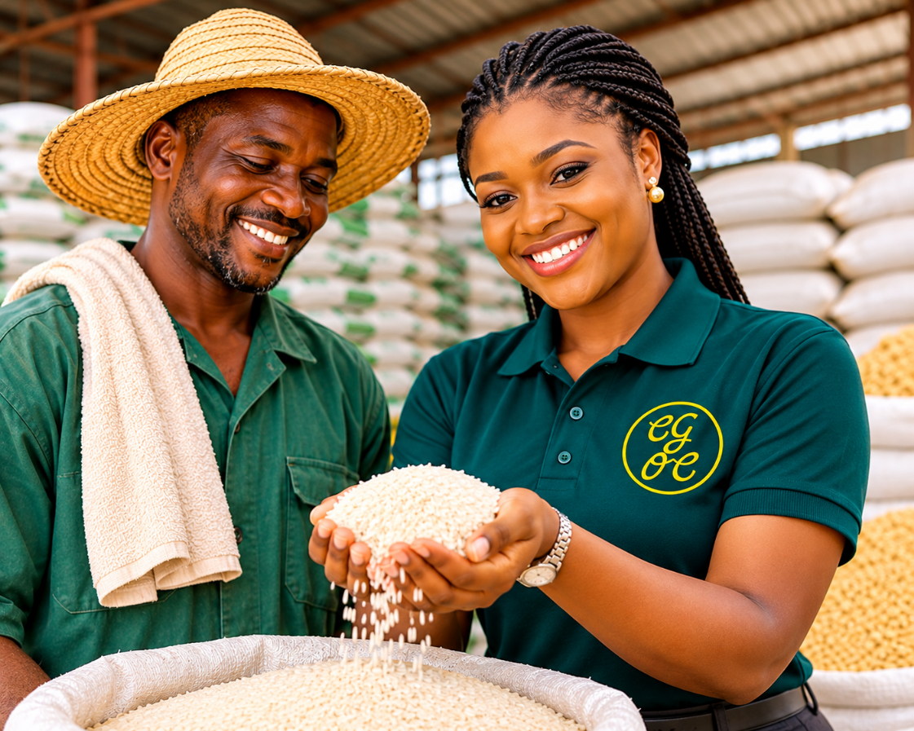

01
Grain and oilseed sourcing
Sourcing grains and oilseeds from farmers, producers and suppliers, with attention to produce quality, availability and reliable supply.

C.G. OKAFOR CO. BUSINESS
We source, trade and add value to grains and oilseeds. Working across agricultural supply chains, we connect farm produce to the markets and industries that depend on it.
Discover what we doWHO WE ARE
Okafor Grain and Oilseeds focuses on the sourcing, trading and value addition of grains and oilseeds. We work to make agricultural produce available to businesses, processors and other markets that depend on reliable supplies.
From identifying quality produce and building relationships with farmers and suppliers to handling, processing and distributing agricultural commodities, our focus is on creating value across the agricultural supply chain.
OUR AREAS OF FOCUS
We bring together agricultural sourcing, commodity trading and value addition to connect farm produce with markets and create more value from agricultural products.
Sourcing grains and oilseeds from farmers, producers and suppliers, with attention to produce quality, availability and reliable supply.
Trading and supplying agricultural commodities to processors, food businesses and other buyers that require dependable access to grains and oilseeds.
Improving the value of agricultural produce through processing, preparation, packaging and other activities that make products more useful to the market.
WHAT WE PROVIDE
Agricultural produce moves through different stages before reaching food businesses and consumers. We focus on sourcing, handling and supplying quality grains and oilseeds while exploring opportunities to create more value from them.

GRAIN AND OILSEED PRODUCTS
Our focus covers grains, oilseeds and other agricultural commodities with uses across food production and processing.
Sourcing and supplying rice for food markets, processors, distributors and other buyers.
Sourcing and trading melon seeds used in food preparation, processing and other applications.
Connecting producers and buyers of yam bean, an agricultural product with food and market value.
Trading and supplying selected grains and agricultural commodities for different market needs.
Sourcing and supplying oilseed crops used in food production and oil processing.
Agricultural products prepared, processed or packaged to meet the needs of different buyers and markets.
OUR MARKETS
Different buyers have different requirements. We work across the supply chain to connect agricultural commodities with the markets where they are needed.
Supplying grains and oilseeds used as raw materials in food manufacturing and processing.
Connecting food businesses with agricultural commodities required for their products and operations.
Working with buyers and distributors seeking agricultural produce for wholesale and resale.
Building sourcing relationships with farmers and producers to connect their harvests with markets.
Supporting the movement of agricultural products through distribution channels to reach more buyers.
CREATING VALUE FROM AGRICULTURE
Agricultural produce creates opportunities at every stage of the supply chain. We focus on making those opportunities count by improving how produce is sourced, handled, traded and prepared for the market.
Build relationships with farmers and suppliers to improve access to agricultural produce.
Pay attention to the quality, storage, handling and movement of agricultural commodities.
Explore ways to process, prepare and package agricultural products to serve wider markets.
HOW WE WORK
Successful agricultural trade begins with understanding the produce and the people who need it. We consider product quality, availability, handling and market requirements to identify practical opportunities across the supply chain.
Identify farmers, producers and suppliers with suitable grains and oilseeds.
Understand buyer requirements and connect agricultural produce with the right markets.
Supply, process and prepare agricultural products to create value beyond the farm.
LET'S WORK TOGETHER
Are you a farmer, agricultural producer, processor or commodity buyer? Let's discuss how we can work together.
Contact Us on WhatsApp